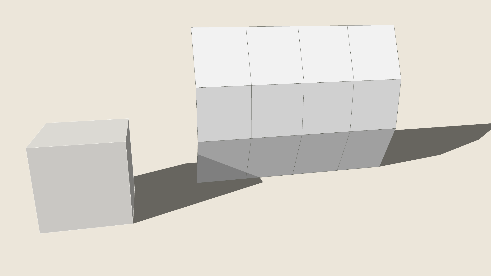
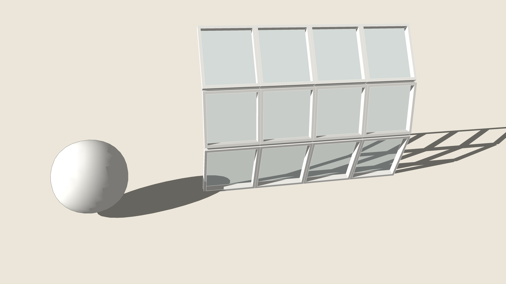

Select a group, a component or faces and run Mesh Studio: smooth the mesh by Catmull–Clark subdivision (1–3 times, its edges softened, a surface's open edges kept), or panel it — each face a frame round a glass pane (width and depth in cm), a diamond with its corner triangles, or triangles from its centre, in two finishes. The result is a new group in the same place; the original is hidden to compare. One Undo.


BeforeAfter